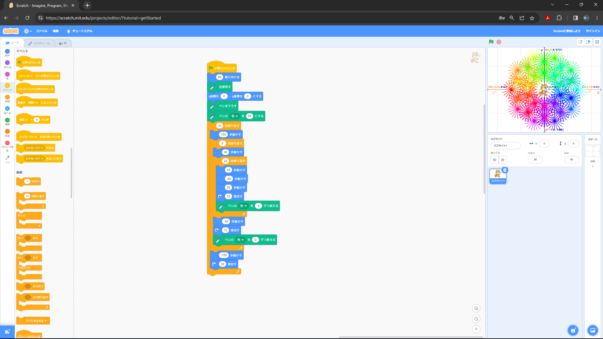
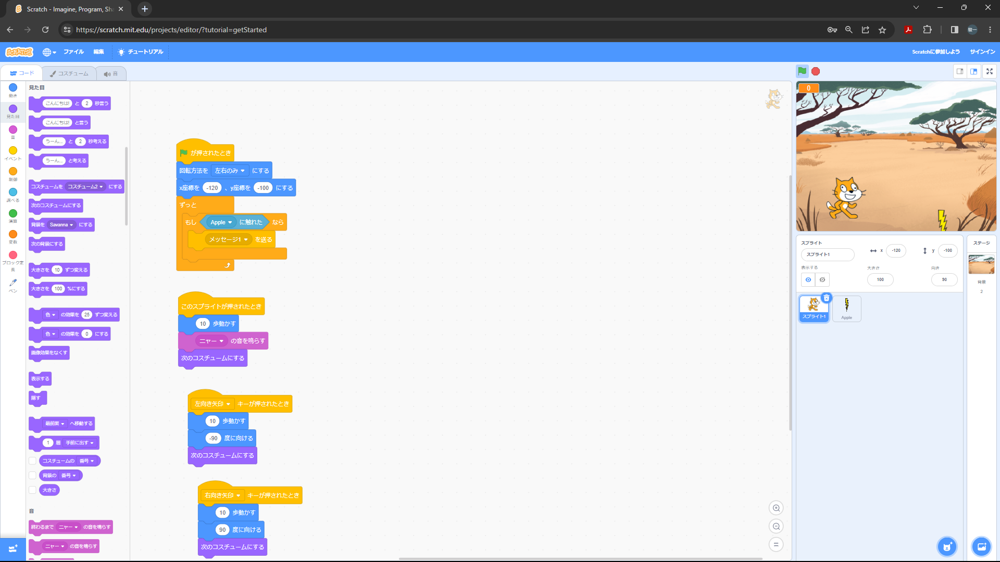

1週目のレポート ： 公大高専１年実習I-1
a班5番 uki
第1週目
1-1 サイエンスアート

1.内容
スクラッチを使って線を書くプログラムを利用して、模様を作った。
2.感想
とても簡単にできた。中学校の時にやったことがあったのでしってた。
1-2 ゲーム

1.内容
スクラッチでリンゴを落としてとるゲームを作った。
2.感想
体験授業のままだったので普通にいい感じだった。
1-3 ホームページ作成
私のホームページ
1.内容
ホームページのhtmlの一部を書き換えて自分のホームページにする
2.感想
headのところより下は自分でもできそうだと思った。